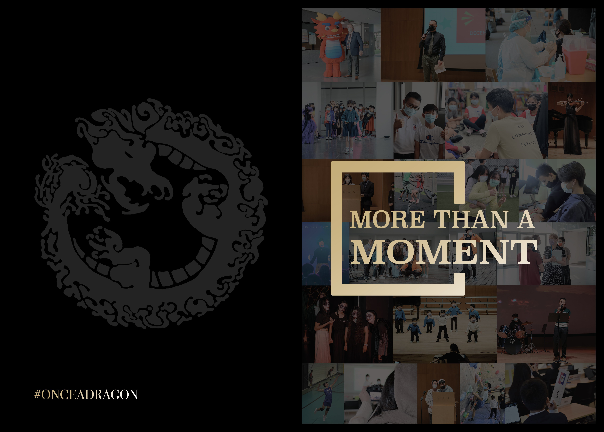

The front and back covers of the yearbook. Many parts are printed with a reflective/metallic material, including the title, title shape element, back cover dragon, and back cover hashtag. The reflective material allows for the portions to stand out from what is behind them, especially like on the front cover where there are pictures with toned-down brightness to create more contrast between title and background. The dragon on the back cover is a continuation of our yearbook tradition, but this year its opacity is lowered and instead emphasized with its printing material to create a more understated look.
